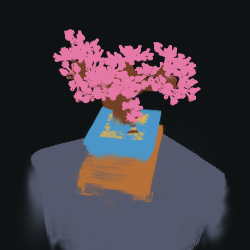
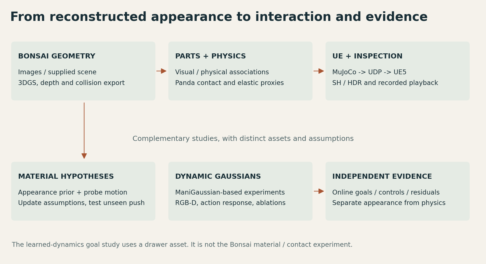
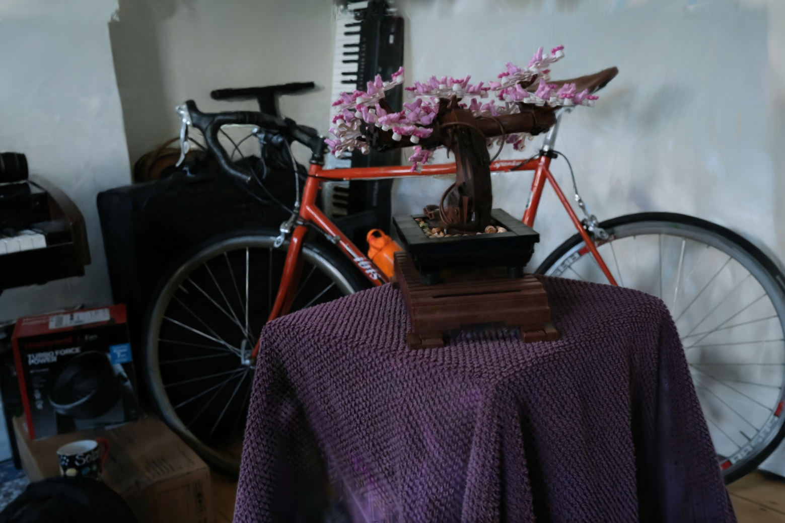
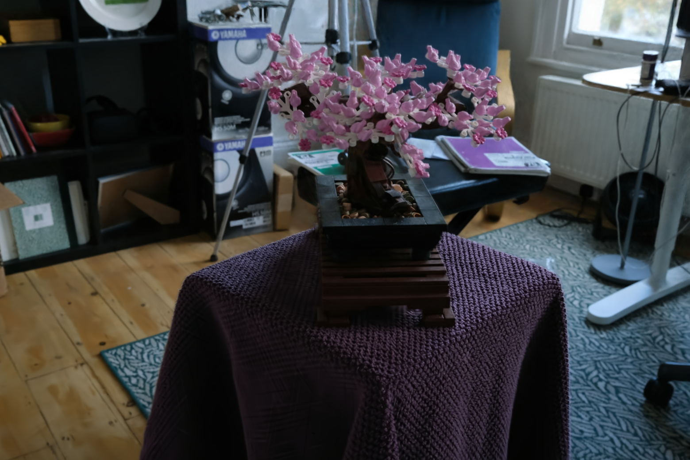
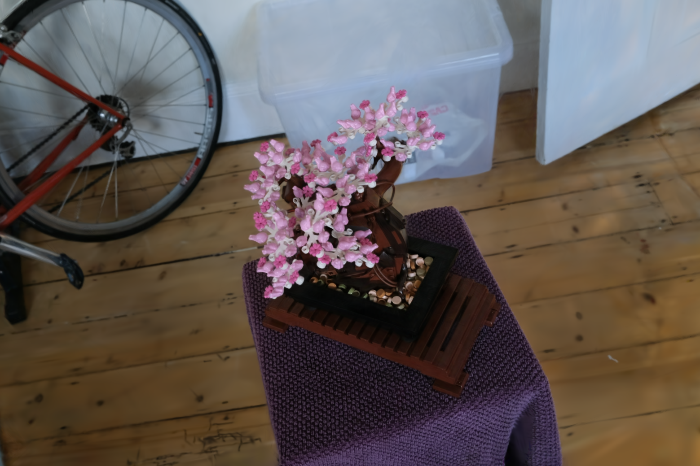
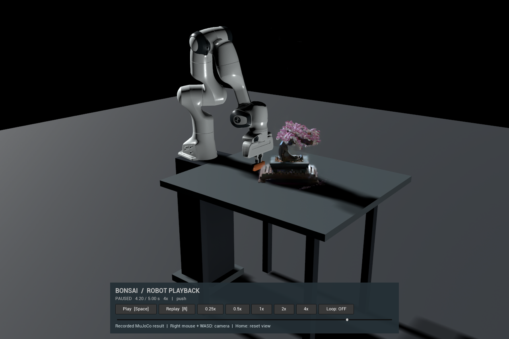
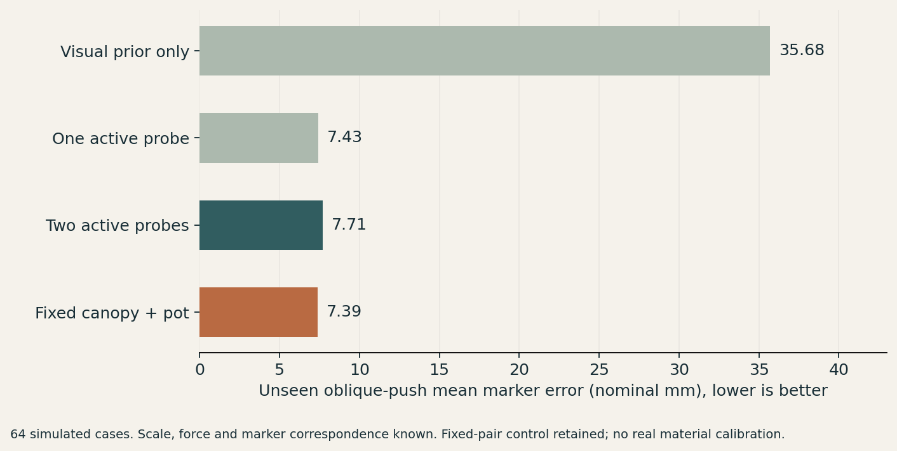
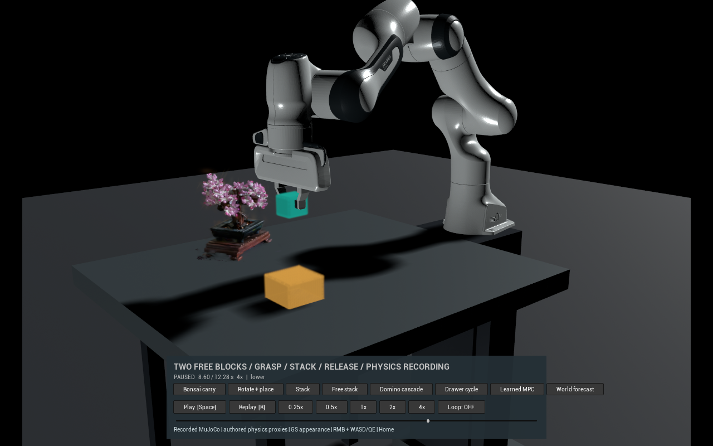
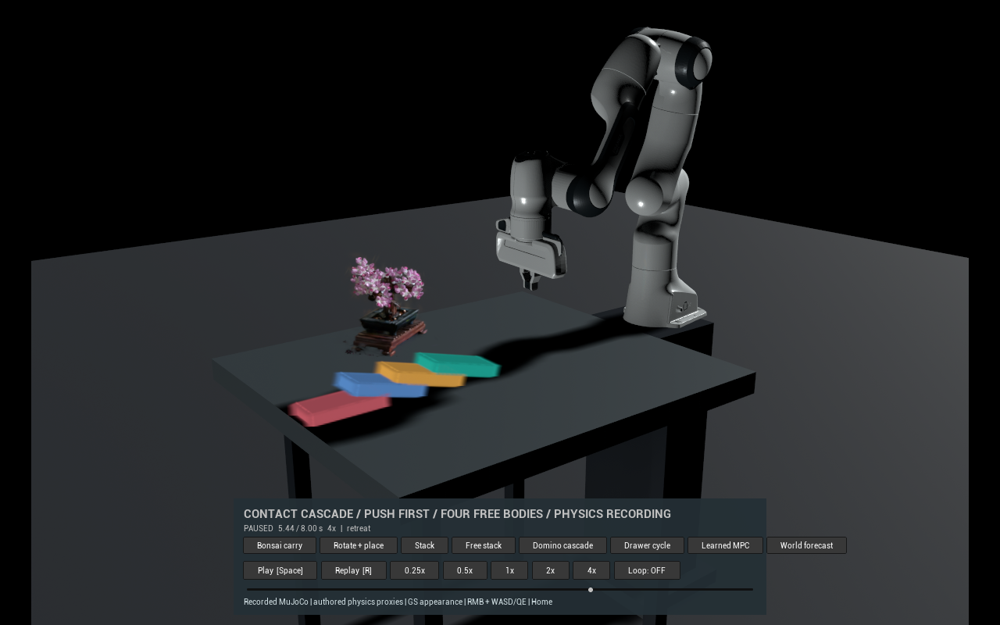
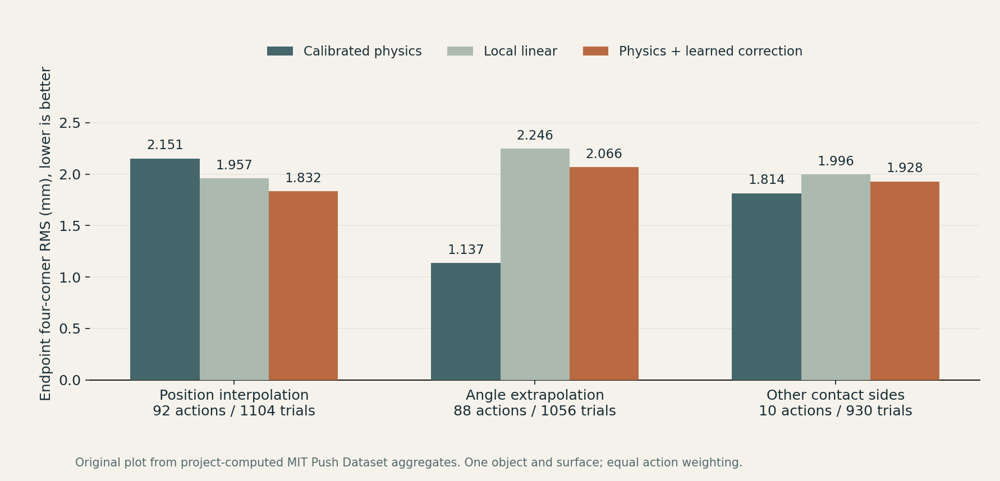

▶ Watch contact and recoveryThe Bonsai is rendered from all 239,941 supplied scene Gaussians. Joint motors drive real engine contact; the plant appearance follows its associated physical parts. Asset and physics scope ↗
239,941Gaussians in the contact scene
4 conditionsRobot / part contact recordings
31.44 dBSeparate trained Bonsai / 37 views
960 replaysSeparate drawer goal study / 30 configurations
01 / Primary demonstration
Touch the pot. Brush the canopy. Release.
Two synchronized views of actual recorded contact. Pause, scrub, replay and change playback speed.
Robot and sceneRecorded MuJoCo result
Contact detailSame run / synchronized
Paused · 1×
Canopy contact and recovery
The motor-driven paddle brushes the flower clusters, then withdraws. The assumed elastic joints drive the recovery; the plant is not animated by directly assigning an object trajectory.
Pot peak displacement
0.05 mm
Canopy peak displacement
39.25 mm
Peak contact force
0.313 N
Lengths are nominal simulation units. Materials and scale are assumed, not measured from the real plant. These all-Gaussian contact videos use SH0 appearance; complete SH / HDR is a separate UE integration below. Playback changes do not recompute physics. Baked plant illumination and shadows remain unchanged.
Why attribute the motion to contact?
All four conditions recorded robot / paddle contact and no solver warnings. A paired control replayed the same recorded joint-motor commands with robot / object contact disabled, then compared part trajectories over time and at the endpoint. This tests the source of the simulated motion. It does not calibrate the physical plant or establish real-world material accuracy. Recorded maximum paddle penetration was at most 0.101 nominal mm.
02 / Part-wise Gaussian simulation
One appearance. Different physical roles.
Persistent visual identities connect the canopy, trunk, pot and support to the physical state. Part motion updates centers and anisotropic covariance while retaining appearance.
Material hypotheses express uncertainty. A visually plausible label is not a measured material property.

Scene-specific association, not ground-truth semantic segmentation. Boundaries can contain errors; hidden fill is modeled as a hypothesis.
Canopy / flower clustersTrunk / branchesVisible fillPotWood standCloth support
Canopy and trunk use equivalent rigid parts with elastic joints. Pot and stand are rigid proxies. The scene does not model individual leaf shells, granular soil or fracture.
03 / Reconstruction, geometry and engine integration
Train the scene. Export geometry. Keep the states aligned.
A separately trained Bonsai baseline connects images to Gaussian geometry. Depth backprojection, multiview fusion and robust surface fitting provide collision candidates; MuJoCo state reaches UE5 through UDP.

High-level view of complementary studies. The learned-dynamics / online goal experiment uses a drawer, not the Bonsai contact asset.
Actual Bonsai training
Gaussian Grouping baseline: 255 training images, 30,000 iterations, 2,453,898 Gaussians. The 37 same-capture image-loss holdout views average 31.437 dB PSNR and 0.9364 SSIM.
Supplied COLMAP reconstruction uses the capture. Later development reused these views. The contact hero uses a separate supplied 239,941-Gaussian asset. These counts and metrics must not be combined.
Geometry and contact
Calibrated-camera depth backprojection, multiview consistency, robust plane / surface fitting and collision export. Proxy assumptions and contact failures are documented separately from image quality.
The combined consistency / robust baseline did not beat robust fitting alone in controlled contact experiments. Collision geometry is an approximation, with nominal scale and closure assumptions.

Declared view 0

Declared view 18

Declared view 36
Actual saved renders from the separately trained model. Views 0 / 18 / 36 were declared before retrieval. No source photographs or model weights are packaged.
MuJoCo → UDP → C++ → UE5
Online state and native playback
Engine integration includes complete third-order SH / HDR in a separate trained-model candidate, coordinate and pose checks, and actual DX11 live-state validation.
Native UE controls support pause, replay, a scrub timeline, looping and 0.25×–4× playback. Recorded playback and online MuJoCo synchronization are separate operating modes.
The video beside this text is the existing color-corrected supplied-model recording, not evidence that this older recording uses full SH. New full-SH motion-rebuild frames averaged about 57–59 ms in two limited runs; cached frame rates are not a continuous-motion benchmark.
Actual UE capture of a recorded MuJoCo contact interaction. The native control screenshot is shown below.

Actual packaged UE interface. Native callback and state checks were performed; this does not assert independent testing of every physical mouse / keyboard action.
04 / Material assumptions and active probing
Observe a response. Update the hypothesis.
Part association allows material assumptions to reach the engine. Appearance supplies a candidate prior; observed probe motion updates hypothesis weights before a new action is predicted.

64 simulated cases; mean marker prediction error for an unseen oblique push, in nominal mm. This is not a measured error on a physical Bonsai.
↳
35.68 → 7.71 mm after two active probes. The major information comes from motion observations. One probe and a suitable fixed pair are competitive; active selection is not universally better.
Bayesian update, follow-up controls and limits
The project maps a finite set of part-material hypotheses into engine configurations, updates weights using observed displacement and selects probes to reduce uncertainty or improve a future prediction. Detailed algorithms, parameter values and hypothesis packages remain private.
A later frozen study used 128 new simulated cases / 640 solves. Target-directed probing achieved 6.75 mm against a preselected fixed pair's 7.02 mm within the proxy regime, but 11.73 mm against 11.26 mm when contact / compliance conditions changed. The overall cross-condition success criterion was not passed. The observations assume known registration, applied force and marker correspondence. Internal fill arrangements can also be externally indistinguishable.
05 / Dynamic Gaussian world-model research
Action-conditioned models. Controlled evaluation.
ManiGaussian-based experiments corrected camera / depth interfaces, added multiview supervision and relative-action conditioning, and studied static / dynamic decomposition with training and ablation controls.
Nearest-neighbor retrieval, relative-action retrieval, pose / language retrieval and local Gaussian translation provide comparison mechanisms. These are established baseline families, not new inventions claimed here.
Predict, execute, observe again
The online study generates candidate outcomes before execution, actually executes a selected macro-action, and reads a new RGB-D observation for the next decision. An expert grasp prefix, action library and goal observation are supplied.
Separate control from visual fidelity
The reported goal-reaching improvement concerns final executed drawer position. Reconstruction blur and missing detail remain limitations. A persistent, contact-accurate general world model, full original policy training and real-robot transfer are not established.
06 / Executed goal-reaching evidence
99.4% within 2 cm. Under stated conditions.
30 independent initial configurations, 60 supplied goals, 16 method / seed labels and 960 actual simulation replays. Repeated labels are not 960 independent configurations.
Final measured drawer target error ≤20 mm, with no execution error. At most two macro-actions, with renewed RGB-D observations. The expert grasp prefix, command library and desired goal RGB-D are supplied.
Same drawer asset / actual execution / all held-out configurations
Method
Reached
Mean goal error
Static / dynamic decomposition
99.4%
2.11 mm
Relative-command network
83.3%
8.91 mm
Same model, one execution
90.0%
5.96 mm
Earlier multiview model
56.1%
30.50 mm
Experimental unit, controls and interpretation
Scoring first averages the two goals within each independent configuration, then averages configurations and training seeds. The decomposition / relative-command paired difference is 16.11 percentage points, with an exploratory 95% interval of [10.00, 22.22]. Three training seeds repeat conditions rather than introduce new scenes. Intervals resample independent configurations within drawer levels and training seeds; they are not adjusted for multiple comparisons.
This is post-grasp visual target reaching on one simulation asset. It is not full autonomous RLBench task success, a new-object test, a Bonsai manipulation policy success rate or reconstruction accuracy. Offline selection was a separate earlier experiment and had less conclusive structural comparisons. Key novelty is not established by these numbers alone.
07 / Other contact interactions
Free-body stacking. Contact-propagated dominoes.

Both stack objects are free bodies
32/32 held-out simulations under a known-state waypoint controller. The bottom block is not welded or mocap-bound. Idealized box geometry and limited parameter variation constrain the result.

The robot touches the first block only
32/32 simulations recorded successive neighbor contact and ordered toppling. Eight no-action controls remained upright. No trajectories or external force were assigned to the later blocks.
Original project-authored Gaussian block appearance; reconstructed Bonsai background. UE replays MuJoCo records. These are physics / control demonstrations, not scanned-block reconstruction or a learned-world-model prediction. Shadow proxies are not Gaussian self-shadowing.
08 / Real-record validation
From simulation to real recorded pushes.
An independent offline study uses real square-block pushing records to compare calibrated physics, a local baseline and a learned physics correction.

Original plot from project-computed MIT Push Dataset aggregates. One object / surface, command-conditioned endpoint forecasts, equally weighted action groups. Future executed-tip logs are not forecast inputs.
Interpolation: 2.151 → 1.832 mm four-corner RMS. Angle shift: physics 1.137 vs correction 2.066 mm. Other sides: physics 1.814 vs correction 1.928 mm. The overall registered test was not passed. Raw records are not packaged.
Project contribution and research position
Engineering the connection. Testing the claims.
Representation and geometry. Gaussian identity / part association, coordinate contracts, depth / collision adaptation and controlled geometry comparisons.
Rendering and interaction. MuJoCo Panda contact, UDP / C++ / UE integration, full-SH / HDR interfaces and synchronized inspection tools.
Learning and evidence. Camera / depth repairs, action-conditioned experiment variants, ablations, post-grasp online evaluation and real-record residual baselines.
The project builds on 3DGS, Gaussian Grouping, ManiGaussian, MuJoCo and public scene assets. It is a research engineering prototype with bounded empirical gains and preserved negative results. A broadly novel world model, real material identification and real-robot transfer remain research goals.